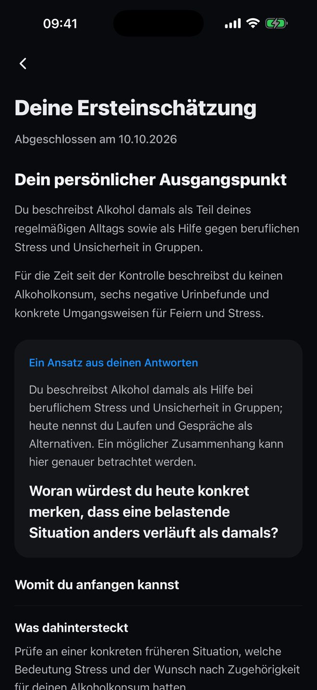
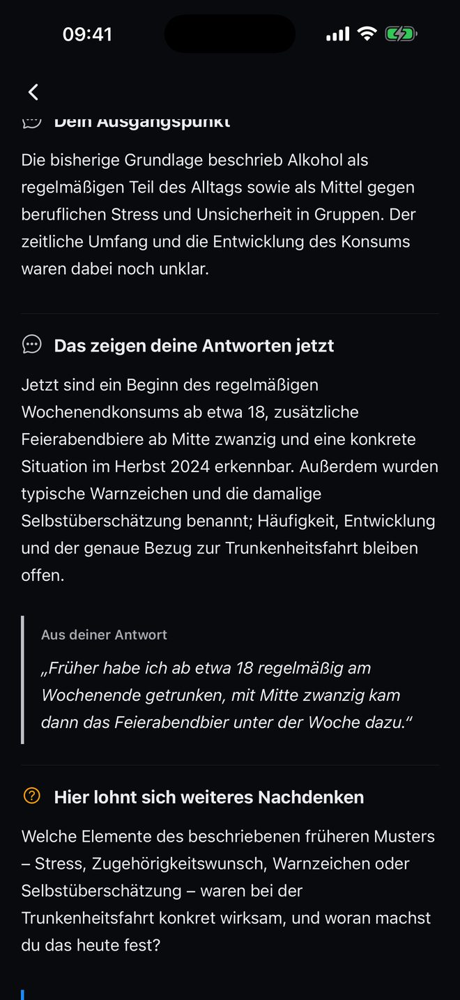

Deine persönliche MPU-Vorbereitung.
Erzähl deinen Fall, erhalte eine persönliche Einordnung und übe das MPU-Gespräch Schritt für Schritt – ehrlich statt auswendig gelernt.


Was MPU Coach für dich tut
- Dein Fall als AusgangspunktAcht Fragen zu deinem MPU-Anlass und eine verständliche Einordnung, was du schon nachvollziehbar erklärst und wo du genauer hinschauen solltest.
- Üben mit RückmeldungFokustrainings mit Fragen, die auf deinen Antworten aufbauen, kritische Rückfragen und ein Widerspruchs-Check.
- Das Gespräch simulierenÜbe ein zusammenhängendes MPU-Gespräch und erhalte im Anschluss eine Auswertung.
- Deine Daten, deine EntscheidungGetrennte Einwilligungen, Export und Löschung jederzeit. Start ohne Account möglich.
MPU Coach ist ein Trainings- und Reflexionswerkzeug. Die App ersetzt keine verkehrspsychologische Beratung, stellt keine Diagnosen und gibt keine Garantie für das Bestehen der MPU.